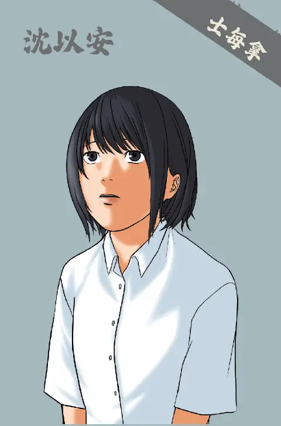
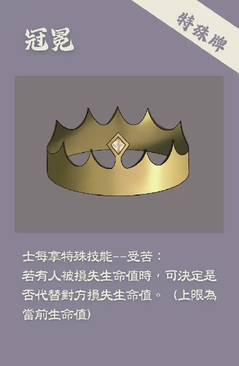

示每拿－－受苦


「沈以安，你都高三了，還每個禮拜去什麼教會？」
「看看你哥哥，學測就考上台大了，你現在這樣有考生的樣子嗎？」
媽媽站在房門外大聲說著，我的 腦袋飛速運轉，如果試圖說些什麼，又會招致怎樣的駁斥呢？若是沉默不語，這樣比較的指責，我又能承受幾分？
「那些什麼上帝齁，都只是噱頭啦！都是你自己心理太脆弱了」見我沒有回應，媽媽走進來，用指尖敲了敲牆上掛著的十字架。木質十字架與牆面發出清脆的聲響，傳入耳中聽來卻格外刺耳。
作為第一代基督徒，爭取父母的理解實在困難重重。或許他們更希望打開房門時，看到像哥哥房間一樣滿牆的比賽照片、獎狀，少了一兩張根本不會發覺。而不是一只並不起眼的十字架。我並不嫉妒哥哥的成就，神創造每個人都是獨一無二的。但在準備學測的此刻，他優秀的那些錄取通知、成績單，像極了沉甸甸的冠冕，同在一個家庭，我好像沒有落後太多的權力……一時不知該如何是好，在放空之時，眼前逐漸模糊、模糊、模糊……
我眨了眨眼，感覺到雙眼重新對焦。竊竊私語的議論聲消失了，取而代之的是熱鬧的街道嘈雜聲，將整座城市灌滿了鮮活的生命力。我……竟然能聽懂他們的對話！近處有幾間神廟，遠處一幢幢華美的屋宇排列著，像是美術課本中出現的古老建築影像。我試圖從每個人的臉上，判斷出關於地域的種種訊息。和煦澄澈的日光將每個人的輪廓鑲上了金邊，他們輪廓各異，透露著此地文化多元的訊息。
一個衣衫襤褸的中年男子吸引了我的目光，一身粗糙、破舊的麻布與看似富裕的城市格格不入。視線追隨著他的腳步，最終在一間麥子攤販前停下。見他與商販說了幾句，從口袋中撈出幾枚硬幣數算，略顯僵硬、又像歉疚，搖了搖手便轉身快步離去。商販望著男子離去的狼狽身影，鄙夷的眼神盡顯無遺，轉頭與另一名顧客議論起，這些短褐穿結的人，必定是受了上帝的懲罰，才會像今天這般貧困。上帝為何會懲罰那名男子呢？
不等我思考片刻，一陣叫嚷劃破街道，幾名兵丁押著囚犯走過。兵丁不耐煩地推著，可囚犯遍體鱗傷，踉蹌拖著步伐向前。他身上有幾道暗紅色的傷疤，似是過了些時日的；又有幾道鮮紅色的血痕在滲著血，令人有些不忍。雖然只是雙眼所見，卻感覺鼻腔灌滿了血腥味，黏膩、令人作嘔，那是死亡與血腥交織的恐怖。後面的人群推擠著我，向一座弧形建築走去。
而後，那名罪犯被丟在場地中央，眾人紛紛在笑鬧聲中坐定，像是等著看好戲一般。「咒詛基督吧！只要承認凱撒是主，我便讓你離去」審判官員輕蔑地說。我心頭一緊，手心冒著冷汗，不知道接下來會發生什麼。只見那名囚徒用力抬起頭，堅定迎上審判官的目光：「我是基督徒，怎麼能褻瀆我的神呢？」
場邊的獸籠裡，一頭獅子發出沉悶的低吼，像是準備狩獵前的最後威脅。「就讓這個基督徒去餵牠們吧」語畢，兵丁放出飢餓已久的公獅，牠惡狠狠飛奔而起，粗礪的趾爪掀起沙土，整座建築籠罩在生命最末的戰慄裡，周遭群眾在此刻竟也像嗜血的野獸，彷彿恨不得鮮血立即染紅黃土。我閉緊雙眼不忍再看，聽覺卻變得更為鮮明了。撕咬、哀嚎、歡呼……層層疊加，我幾乎是連滾帶爬逃出那裡的。不知道走了多久，幾近窒息的凝滯才稍稍退去，依稀聽到「基督」相關字眼，他們說基督徒怪異極了，不臣服於凱撒大帝、不參與商業團體，宣稱神是他們的救主，真是令人不懂！
在這裡，基督徒如此慘烈？那他們……會在意嗎？
「平安，我們是士每拿教會。」無意中，竟然也走到了一間教堂。我想他們看出了我兀自站在門口的侷促，便熱情地將我邀進會堂。會堂內的光線並不明亮，隨著雙眼漸漸適應，才看清士每拿教會的種種擺設。他們並不如我想的富裕，更精確來說，他們顯得貧寒。會堂裡的人們衣著樸素，洋溢著笑容。對於倏然出現在這個時空的我，那是一種真誠、慈祥的微笑，是我在教會中看到長大的，安定人心的微笑。為什麼呢？如果路上那些人說的是真的，為什麼教會裡的他們還能這麼真誠地笑著？
「也沒有什麼能招待你的，畢竟……」
他苦笑了下，繼續說：「多米田大帝逼迫基督徒繳交額外的稅賦，加上我們被排拒在商業團體之外，生活因此而困頓」我在昏暗的空間裡，聽他平靜述說著士每拿教會的故事。我以為面對學測與壓力已經足夠辛苦，但這群士每拿基督徒承受的，是我未能想像的苦難。我在交談裡幾乎感受不到他們的悲傷，甚至感受到他們的堅定。腦中回想起媽媽的念叨，心中泛起一陣漣漪。經過今日的波折，心境時起時落，此刻我的心漸慢了下來，有一種在地上踩穩，進而挺直身體的一絲堅定。
咿——。老舊門板推開的聲音，打斷了我的思緒，一位手持信件的長者走了出來，邀請我們一起展閱「……我知道你的患難，你的貧窮，也知道那自稱是猶太人所說的毀謗話，其實他們不是猶太人，乃是撒但一會的人。你將要受的苦你不用怕。魔鬼要把你們中間幾個人下在監裡，叫你們被試煉，你們必受患難十日。你務要至死忠心，我就賜給你那生命的冠冕。聖靈向眾教會所說的話，凡有耳的，就應當聽！得勝的，必不受第二次死的害。[1]」
明明是寫給士每拿教會的信件，我聽著竟然閃過想要落淚的情緒。我們所受的苦，神都看見了吧！信仰的路起起伏伏，他們的背影卻是那麼堅定，遂得著神賜下生命的冠冕。而我自己呢？那看不見的生命冠冕，才是我想用一生去追索的吧！
任務：保護老約翰，在羅馬政府的壓迫中，仍然持守真理、興旺福音。
註解：
[1] 啟示錄 2:9~11